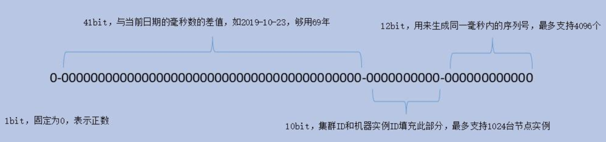

<!DOCTYPE HTML>
<html lang="zh-hans" >
    <head>
        <meta charset="UTF-8">
        <meta content="text/html; charset=utf-8" http-equiv="Content-Type">
        <title>分布式ID · java-note</title>
        <meta http-equiv="X-UA-Compatible" content="IE=edge" />
        <meta name="description" content="">
        <meta name="generator" content="GitBook 3.2.3">
        <meta name="author" content="doctording">
        
        
    
    <link rel="stylesheet" href="../../gitbook/style.css">

    
            
                
                <link rel="stylesheet" href="../../gitbook/gitbook-plugin-prism/prism.css">
                
            
                
                <link rel="stylesheet" href="../../gitbook/gitbook-plugin-ace/ace.css">
                
            
                
                <link rel="stylesheet" href="../../gitbook/gitbook-plugin-codeblock-filename/block.css">
                
            
                
                <link rel="stylesheet" href="../../gitbook/gitbook-plugin-search-plus/search.css">
                
            
                
                <link rel="stylesheet" href="https://maxcdn.bootstrapcdn.com/bootstrap/3.3.7/css/bootstrap.min.css">
                
            
                
                <link rel="stylesheet" href="../../gitbook/gitbook-plugin-sectionx/sectionx.css">
                
            
                
                <link rel="stylesheet" href="../../gitbook/gitbook-plugin-splitter/splitter.css">
                
            
                
                <link rel="stylesheet" href="../../gitbook/gitbook-plugin-tbfed-pagefooter/footer.css">
                
            
                
                <link rel="stylesheet" href="../../gitbook/gitbook-plugin-expandable-chapters/expandable-chapters.css">
                
            
                
                <link rel="stylesheet" href="../../gitbook/gitbook-plugin-back-to-top-button/plugin.css">
                
            
                
                <link rel="stylesheet" href="../../gitbook/gitbook-plugin-code/plugin.css">
                
            
                
                <link rel="stylesheet" href="../../gitbook/gitbook-plugin-page-treeview/style.css">
                
            
                
                <link rel="stylesheet" href="../../gitbook/gitbook-plugin-advanced-emoji/emoji-website.css">
                
            
                
                <link rel="stylesheet" href="../../gitbook/gitbook-plugin-fontsettings/website.css">
                
            
        

    

    
        
        <link rel="stylesheet" href="../../styles/website.css">
        
    

        
    
    
    <meta name="HandheldFriendly" content="true"/>
    <meta name="viewport" content="width=device-width, initial-scale=1, user-scalable=no">
    <meta name="apple-mobile-web-app-capable" content="yes">
    <meta name="apple-mobile-web-app-status-bar-style" content="black">
    <link rel="apple-touch-icon-precomposed" sizes="152x152" href="../../gitbook/images/apple-touch-icon-precomposed-152.png">
    <link rel="shortcut icon" href="../../gitbook/images/favicon.ico" type="image/x-icon">

    
    <link rel="next" href="rpc.html" />
    
    
    <link rel="prev" href="distribute_lock.html" />
    

    </head>
    <body>
        
<div class="book">
    <div class="book-summary">
        
            
<div id="book-search-input" role="search">
    <input type="text" placeholder="输入并搜索" />
</div>

            
                <nav role="navigation">
                


<ul class="summary">
    
    

    

    
        
        
    
        <li class="chapter " data-level="1.1" data-path="../../">
            
                <a href="../../">
            
                    
                    Introduction
            
                </a>
            

            
        </li>
    
        <li class="chapter " data-level="1.2" >
            
                <span>
            
                    
                    [计算机组成]
            
                </span>
            

            
            <ul class="articles">
                
    
        <li class="chapter " data-level="1.2.1" data-path="../computer/cpu_cache.html">
            
                <a href="../computer/cpu_cache.html">
            
                    
                    CPU,缓存
            
                </a>
            

            
        </li>
    
        <li class="chapter " data-level="1.2.2" data-path="../computer/process_thread.html">
            
                <a href="../computer/process_thread.html">
            
                    
                    进程和线程
            
                </a>
            

            
        </li>
    
        <li class="chapter " data-level="1.2.3" data-path="../computer/memory_manage.html">
            
                <a href="../computer/memory_manage.html">
            
                    
                    物理内存管理算法
            
                </a>
            

            
        </li>
    

            </ul>
            
        </li>
    
        <li class="chapter " data-level="1.3" >
            
                <span>
            
                    
                    [I/O & 网络]
            
                </span>
            

            
            <ul class="articles">
                
    
        <li class="chapter " data-level="1.3.1" data-path="../java_io_net/io_interrupte.html">
            
                <a href="../java_io_net/io_interrupte.html">
            
                    
                    IO与中断
            
                </a>
            

            
        </li>
    
        <li class="chapter " data-level="1.3.2" >
            
                <span>
            
                    
                    [IO基础]
            
                </span>
            

            
            <ul class="articles">
                
    
        <li class="chapter " data-level="1.3.2.1" data-path="../java_io_net/io_basic.html">
            
                <a href="../java_io_net/io_basic.html">
            
                    
                    Java IO基础
            
                </a>
            

            
            <ul class="articles">
                
    
        <li class="chapter " data-level="1.3.2.1.1" data-path="../java_io_net/io_basic_pro.html">
            
                <a href="../java_io_net/io_basic_pro.html">
            
                    
                    Java IO面试题
            
                </a>
            

            
        </li>
    

            </ul>
            
        </li>
    
        <li class="chapter " data-level="1.3.2.2" data-path="../java_io_net/nio_basic.html">
            
                <a href="../java_io_net/nio_basic.html">
            
                    
                    BIO 到 NIO & 多线程问题
            
                </a>
            

            
        </li>
    
        <li class="chapter " data-level="1.3.2.3" data-path="../java_io_net/from_io_to_epoll.html">
            
                <a href="../java_io_net/from_io_to_epoll.html">
            
                    
                    再谈select & epoll
            
                </a>
            

            
        </li>
    
        <li class="chapter " data-level="1.3.2.4" data-path="../java_io_net/server_socket_channel.html">
            
                <a href="../java_io_net/server_socket_channel.html">
            
                    
                    ServerSocketChannel
            
                </a>
            

            
        </li>
    

            </ul>
            
        </li>
    
        <li class="chapter " data-level="1.3.3" data-path="design.html">
            
                <a href="design.html">
            
                    
                    网络IO设计模式
            
                </a>
            

            
        </li>
    
        <li class="chapter " data-level="1.3.4" >
            
                <span>
            
                    
                    [网络协议]
            
                </span>
            

            
            <ul class="articles">
                
    
        <li class="chapter " data-level="1.3.4.1" data-path="../java_io_net/http_tcp.html">
            
                <a href="../java_io_net/http_tcp.html">
            
                    
                    tcp & udp
            
                </a>
            

            
        </li>
    
        <li class="chapter " data-level="1.3.4.2" data-path="../java_io_net/http_tcp_tcpdump.html">
            
                <a href="../java_io_net/http_tcp_tcpdump.html">
            
                    
                    tcp tcpdump
            
                </a>
            

            
        </li>
    
        <li class="chapter " data-level="1.3.4.3" data-path="../java_io_net/http_tcp_pro.html">
            
                <a href="../java_io_net/http_tcp_pro.html">
            
                    
                    http & tcp面试题
            
                </a>
            

            
        </li>
    

            </ul>
            
        </li>
    
        <li class="chapter " data-level="1.3.5" data-path="nginx.html">
            
                <a href="nginx.html">
            
                    
                    nginx基础
            
                </a>
            

            
        </li>
    
        <li class="chapter " data-level="1.3.6" data-path="../java_io_net/netty.html">
            
                <a href="../java_io_net/netty.html">
            
                    
                    netty
            
                </a>
            

            
        </li>
    

            </ul>
            
        </li>
    
        <li class="chapter " data-level="1.4" >
            
                <span>
            
                    
                    [数据库]
            
                </span>
            

            
            <ul class="articles">
                
    
        <li class="chapter " data-level="1.4.1" data-path="../db_cache/io.html">
            
                <a href="../db_cache/io.html">
            
                    
                    局部性原理&磁盘IO
            
                </a>
            

            
        </li>
    
        <li class="chapter " data-level="1.4.2" data-path="../db_cache/mysql.html">
            
                <a href="../db_cache/mysql.html">
            
                    
                    MySQL
            
                </a>
            

            
            <ul class="articles">
                
    
        <li class="chapter " data-level="1.4.2.1" data-path="../db_cache/mysql_batis.html">
            
                <a href="../db_cache/mysql_batis.html">
            
                    
                    MySQL连接 & MyBatis
            
                </a>
            

            
        </li>
    
        <li class="chapter " data-level="1.4.2.2" data-path="../db_cache/mysql_opt.html">
            
                <a href="../db_cache/mysql_opt.html">
            
                    
                    MySQL优化
            
                </a>
            

            
        </li>
    
        <li class="chapter " data-level="1.4.2.3" data-path="../db_cache/mysql_monitor.html">
            
                <a href="../db_cache/mysql_monitor.html">
            
                    
                    MySQL线上监控 & 指标
            
                </a>
            

            
        </li>
    

            </ul>
            
        </li>
    
        <li class="chapter " data-level="1.4.3" data-path="../db_cache/redis.html">
            
                <a href="../db_cache/redis.html">
            
                    
                    Redis
            
                </a>
            

            
            <ul class="articles">
                
    
        <li class="chapter " data-level="1.4.3.1" data-path="../db_cache/redis_skip_list.html">
            
                <a href="../db_cache/redis_skip_list.html">
            
                    
                    跳表&zset
            
                </a>
            

            
        </li>
    

            </ul>
            
        </li>
    
        <li class="chapter " data-level="1.4.4" data-path="../db_cache/mq.html">
            
                <a href="../db_cache/mq.html">
            
                    
                    rabbitmq
            
                </a>
            

            
        </li>
    

            </ul>
            
        </li>
    
        <li class="chapter " data-level="1.5" >
            
                <span>
            
                    
                    [分布式]
            
                </span>
            

            
            <ul class="articles">
                
    
        <li class="chapter " data-level="1.5.1" >
            
                <span>
            
                    
                    [分布式基础]
            
                </span>
            

            
            <ul class="articles">
                
    
        <li class="chapter " data-level="1.5.1.1" data-path="distribute.html">
            
                <a href="distribute.html">
            
                    
                    分布式&微服务
            
                </a>
            

            
        </li>
    
        <li class="chapter " data-level="1.5.1.2" data-path="distribute_data.html">
            
                <a href="distribute_data.html">
            
                    
                    分布式存储
            
                </a>
            

            
        </li>
    
        <li class="chapter " data-level="1.5.1.3" data-path="distribute_tx.html">
            
                <a href="distribute_tx.html">
            
                    
                    分布式事务
            
                </a>
            

            
        </li>
    
        <li class="chapter " data-level="1.5.1.4" data-path="distribute_lock.html">
            
                <a href="distribute_lock.html">
            
                    
                    分布式锁
            
                </a>
            

            
        </li>
    
        <li class="chapter active" data-level="1.5.1.5" data-path="distribute_id.html">
            
                <a href="distribute_id.html">
            
                    
                    分布式ID
            
                </a>
            

            
        </li>
    

            </ul>
            
        </li>
    
        <li class="chapter " data-level="1.5.2" data-path="rpc.html">
            
                <a href="rpc.html">
            
                    
                    rpc
            
                </a>
            

            
        </li>
    
        <li class="chapter " data-level="1.5.3" data-path="zk.html">
            
                <a href="zk.html">
            
                    
                    zookeeper
            
                </a>
            

            
            <ul class="articles">
                
    
        <li class="chapter " data-level="1.5.3.1" data-path="zk2.html">
            
                <a href="zk2.html">
            
                    
                    zookeeper单机源码 & Watch机制
            
                </a>
            

            
        </li>
    
        <li class="chapter " data-level="1.5.3.2" data-path="zk3.html">
            
                <a href="zk3.html">
            
                    
                    zookeeper集群 & Zab协议
            
                </a>
            

            
        </li>
    

            </ul>
            
        </li>
    
        <li class="chapter " data-level="1.5.4" data-path="../db_cache/LFU.html">
            
                <a href="../db_cache/LFU.html">
            
                    
                    LFU
            
                </a>
            

            
        </li>
    
        <li class="chapter " data-level="1.5.5" data-path="../db_cache/LRU.html">
            
                <a href="../db_cache/LRU.html">
            
                    
                    LRU
            
                </a>
            

            
        </li>
    
        <li class="chapter " data-level="1.5.6" data-path="../db_cache/consistent_hash.html">
            
                <a href="../db_cache/consistent_hash.html">
            
                    
                    一致性Hash
            
                </a>
            

            
        </li>
    

            </ul>
            
        </li>
    
        <li class="chapter " data-level="1.6" >
            
                <span>
            
                    
                    [缓存 & 限流]
            
                </span>
            

            
            <ul class="articles">
                
    
        <li class="chapter " data-level="1.6.1" data-path="../db_cache/cache.html">
            
                <a href="../db_cache/cache.html">
            
                    
                    缓存
            
                </a>
            

            
            <ul class="articles">
                
    
        <li class="chapter " data-level="1.6.1.1" data-path="../db_cache/bloom.html">
            
                <a href="../db_cache/bloom.html">
            
                    
                    布隆过滤器
            
                </a>
            

            
        </li>
    

            </ul>
            
        </li>
    
        <li class="chapter " data-level="1.6.2" data-path="flow_limit.html">
            
                <a href="flow_limit.html">
            
                    
                    限流
            
                </a>
            

            
        </li>
    

            </ul>
            
        </li>
    
        <li class="chapter " data-level="1.7" >
            
                <span>
            
                    
                    [常见设计模式]
            
                </span>
            

            
            <ul class="articles">
                
    
        <li class="chapter " data-level="1.7.1" data-path="../design_pattern/proxy.html">
            
                <a href="../design_pattern/proxy.html">
            
                    
                    代理模式
            
                </a>
            

            
            <ul class="articles">
                
    
        <li class="chapter " data-level="1.7.1.1" data-path="../design_pattern/asm.html">
            
                <a href="../design_pattern/asm.html">
            
                    
                    ASM字节码操纵
            
                </a>
            

            
        </li>
    

            </ul>
            
        </li>
    
        <li class="chapter " data-level="1.7.2" data-path="../design_pattern/singleton.html">
            
                <a href="../design_pattern/singleton.html">
            
                    
                    单例模式
            
                </a>
            

            
        </li>
    
        <li class="chapter " data-level="1.7.3" data-path="../design_pattern/factory.html">
            
                <a href="../design_pattern/factory.html">
            
                    
                    工厂模式
            
                </a>
            

            
        </li>
    
        <li class="chapter " data-level="1.7.4" data-path="../design_pattern/template.html">
            
                <a href="../design_pattern/template.html">
            
                    
                    模板方法
            
                </a>
            

            
        </li>
    
        <li class="chapter " data-level="1.7.5" data-path="../design_pattern/strategy.html">
            
                <a href="../design_pattern/strategy.html">
            
                    
                    策略模式
            
                </a>
            

            
        </li>
    
        <li class="chapter " data-level="1.7.6" data-path="../design_pattern/decorator.html">
            
                <a href="../design_pattern/decorator.html">
            
                    
                    装饰器模式
            
                </a>
            

            
        </li>
    
        <li class="chapter " data-level="1.7.7" data-path="../design_pattern/observer.html">
            
                <a href="../design_pattern/observer.html">
            
                    
                    观察者模式
            
                </a>
            

            
        </li>
    
        <li class="chapter " data-level="1.7.8" data-path="../design_pattern/publish.html">
            
                <a href="../design_pattern/publish.html">
            
                    
                    发布订阅模式
            
                </a>
            

            
        </li>
    
        <li class="chapter " data-level="1.7.9" data-path="../design_pattern/visitor.html">
            
                <a href="../design_pattern/visitor.html">
            
                    
                    访问者模式
            
                </a>
            

            
        </li>
    
        <li class="chapter " data-level="1.7.10" data-path="../design_pattern/iterator.html">
            
                <a href="../design_pattern/iterator.html">
            
                    
                    迭代器模式
            
                </a>
            

            
        </li>
    
        <li class="chapter " data-level="1.7.11" data-path="../design_pattern/facade.html">
            
                <a href="../design_pattern/facade.html">
            
                    
                    门面模式
            
                </a>
            

            
        </li>
    

            </ul>
            
        </li>
    
        <li class="chapter " data-level="1.8" >
            
                <span>
            
                    
                    [数据结构和算法基础]
            
                </span>
            

            
            <ul class="articles">
                
    
        <li class="chapter " data-level="1.8.1" data-path="../java_data_structure/algorithm_structure.html">
            
                <a href="../java_data_structure/algorithm_structure.html">
            
                    
                    Java算法数据结构使用
            
                </a>
            

            
            <ul class="articles">
                
    
        <li class="chapter " data-level="1.8.1.1" data-path="../java_utils/sort.html">
            
                <a href="../java_utils/sort.html">
            
                    
                    常见排序(没事手写写)
            
                </a>
            

            
        </li>
    

            </ul>
            
        </li>
    
        <li class="chapter " data-level="1.8.2" data-path="../java_data_structure/java_basic_datastructure.html">
            
                <a href="../java_data_structure/java_basic_datastructure.html">
            
                    
                    常见基础数据结构
            
                </a>
            

            
            <ul class="articles">
                
    
        <li class="chapter " data-level="1.8.2.1" data-path="../java_data_structure/array_list.html">
            
                <a href="../java_data_structure/array_list.html">
            
                    
                    ArrayList & LinkedList & Vector
            
                </a>
            

            
        </li>
    
        <li class="chapter " data-level="1.8.2.2" data-path="../java_data_structure/hash_map.html">
            
                <a href="../java_data_structure/hash_map.html">
            
                    
                    Java8 HashMap
            
                </a>
            

            
            <ul class="articles">
                
    
        <li class="chapter " data-level="1.8.2.2.1" data-path="../java_data_structure/hash_map_java7.html">
            
                <a href="../java_data_structure/hash_map_java7.html">
            
                    
                    Java1.7 HashMap
            
                </a>
            

            
        </li>
    
        <li class="chapter " data-level="1.8.2.2.2" data-path="../java_data_structure/hash_table.html">
            
                <a href="../java_data_structure/hash_table.html">
            
                    
                    HashTable
            
                </a>
            

            
        </li>
    
        <li class="chapter " data-level="1.8.2.2.3" data-path="../java_data_structure/linked_hash_map.html">
            
                <a href="../java_data_structure/linked_hash_map.html">
            
                    
                    LinkedHashMap
            
                </a>
            

            
        </li>
    
        <li class="chapter " data-level="1.8.2.2.4" data-path="../java_data_structure/tree_map.html">
            
                <a href="../java_data_structure/tree_map.html">
            
                    
                    TreeMap
            
                </a>
            

            
        </li>
    

            </ul>
            
        </li>
    
        <li class="chapter " data-level="1.8.2.3" data-path="../java_data_structure/fail_fast.html">
            
                <a href="../java_data_structure/fail_fast.html">
            
                    
                    fail-fast,ConcurrentModificationException
            
                </a>
            

            
        </li>
    
        <li class="chapter " data-level="1.8.2.4" data-path="../java_data_structure/concurrent_datastructure.html">
            
                <a href="../java_data_structure/concurrent_datastructure.html">
            
                    
                    concurrent数据结构
            
                </a>
            

            
            <ul class="articles">
                
    
        <li class="chapter " data-level="1.8.2.4.1" data-path="../java_data_structure/concurrent_hashmap.html">
            
                <a href="../java_data_structure/concurrent_hashmap.html">
            
                    
                    Java8 ConcurrentMap
            
                </a>
            

            
            <ul class="articles">
                
    
        <li class="chapter " data-level="1.8.2.4.1.1" data-path="../java_data_structure/concurrent_hashmap7.html">
            
                <a href="../java_data_structure/concurrent_hashmap7.html">
            
                    
                    Jdk1.7 ConcurrentMap
            
                </a>
            

            
        </li>
    

            </ul>
            
        </li>
    
        <li class="chapter " data-level="1.8.2.4.2" data-path="../java_data_structure/queue.html">
            
                <a href="../java_data_structure/queue.html">
            
                    
                    Java中的队列
            
                </a>
            

            
        </li>
    

            </ul>
            
        </li>
    
        <li class="chapter " data-level="1.8.2.5" data-path="../java_data_structure/Map.html">
            
                <a href="../java_data_structure/Map.html">
            
                    
                    HashMap,HashTable,ConcurrentHashMap对比
            
                </a>
            

            
        </li>
    

            </ul>
            
        </li>
    
        <li class="chapter " data-level="1.8.3" data-path="../java_data_structure/advanced_structure.html">
            
                <a href="../java_data_structure/advanced_structure.html">
            
                    
                    高级数据结构
            
                </a>
            

            
            <ul class="articles">
                
    
        <li class="chapter " data-level="1.8.3.1" data-path="../java_data_structure/b_tree.html">
            
                <a href="../java_data_structure/b_tree.html">
            
                    
                    B/B+ Tree
            
                </a>
            

            
        </li>
    
        <li class="chapter " data-level="1.8.3.2" data-path="../java_data_structure/inversed_index.html">
            
                <a href="../java_data_structure/inversed_index.html">
            
                    
                    倒排索引
            
                </a>
            

            
        </li>
    
        <li class="chapter " data-level="1.8.3.3" data-path="../java_data_structure/lsm_tree.html">
            
                <a href="../java_data_structure/lsm_tree.html">
            
                    
                    LSM Tree
            
                </a>
            

            
        </li>
    

            </ul>
            
        </li>
    

            </ul>
            
        </li>
    
        <li class="chapter " data-level="1.9" >
            
                <span>
            
                    
                    [Java基础问题]
            
                </span>
            

            
            <ul class="articles">
                
    
        <li class="chapter " data-level="1.9.1" data-path="../db_cache/serialize.html">
            
                <a href="../db_cache/serialize.html">
            
                    
                    序列化问题
            
                </a>
            

            
        </li>
    
        <li class="chapter " data-level="1.9.2" data-path="../java_utils/spi.html">
            
                <a href="../java_utils/spi.html">
            
                    
                    Java SPI机制
            
                </a>
            

            
        </li>
    
        <li class="chapter " data-level="1.9.3" data-path="../java_utils/synthetic.html">
            
                <a href="../java_utils/synthetic.html">
            
                    
                    Java Synthetic
            
                </a>
            

            
        </li>
    
        <li class="chapter " data-level="1.9.4" data-path="../java_utils/object.html">
            
                <a href="../java_utils/object.html">
            
                    
                    java.lang.Object
            
                </a>
            

            
        </li>
    
        <li class="chapter " data-level="1.9.5" data-path="../java_data_structure/System_arraycopy.html">
            
                <a href="../java_data_structure/System_arraycopy.html">
            
                    
                    System.arraycopy, Array.copyOf
            
                </a>
            

            
        </li>
    
        <li class="chapter " data-level="1.9.6" data-path="../java_utils/equals_hashcode.html">
            
                <a href="../java_utils/equals_hashcode.html">
            
                    
                    == & equals方法 & hashcode方法
            
                </a>
            

            
        </li>
    
        <li class="chapter " data-level="1.9.7" data-path="../java_utils/Calendar.html">
            
                <a href="../java_utils/Calendar.html">
            
                    
                    Calendar & Date
            
                </a>
            

            
        </li>
    
        <li class="chapter " data-level="1.9.8" data-path="../java_utils/Compare.html">
            
                <a href="../java_utils/Compare.html">
            
                    
                    Comparison method violates its general contract
            
                </a>
            

            
        </li>
    
        <li class="chapter " data-level="1.9.9" data-path="../java_utils/int_Integer.html">
            
                <a href="../java_utils/int_Integer.html">
            
                    
                    int(基本类型) & Integer(包装类类型)
            
                </a>
            

            
        </li>
    
        <li class="chapter " data-level="1.9.10" data-path="../java_utils/exception.html">
            
                <a href="../java_utils/exception.html">
            
                    
                    Java异常&错误
            
                </a>
            

            
        </li>
    
        <li class="chapter " data-level="1.9.11" data-path="../java_utils/String.html">
            
                <a href="../java_utils/String.html">
            
                    
                    String,StringBuffer,StringBuilder
            
                </a>
            

            
        </li>
    
        <li class="chapter " data-level="1.9.12" data-path="../java_utils/reflect.html">
            
                <a href="../java_utils/reflect.html">
            
                    
                    反射机制
            
                </a>
            

            
        </li>
    
        <li class="chapter " data-level="1.9.13" data-path="../java_utils/call_back.html">
            
                <a href="../java_utils/call_back.html">
            
                    
                    回调 & 事件机制
            
                </a>
            

            
        </li>
    
        <li class="chapter " data-level="1.9.14" data-path="../java_utils/array_collection.html">
            
                <a href="../java_utils/array_collection.html">
            
                    
                    数组，集合转换等问题
            
                </a>
            

            
        </li>
    
        <li class="chapter " data-level="1.9.15" data-path="../java_utils/annotation.html">
            
                <a href="../java_utils/annotation.html">
            
                    
                    注解 Annotation
            
                </a>
            

            
        </li>
    
        <li class="chapter " data-level="1.9.16" data-path="../java_jvm/jvm_runtime.html">
            
                <a href="../java_jvm/jvm_runtime.html">
            
                    
                    Runtime类
            
                </a>
            

            
        </li>
    
        <li class="chapter " data-level="1.9.17" data-path="../java_utils/override_overload.html">
            
                <a href="../java_utils/override_overload.html">
            
                    
                    重载和重写
            
                </a>
            

            
        </li>
    
        <li class="chapter " data-level="1.9.18" data-path="../java_utils/reg.html">
            
                <a href="../java_utils/reg.html">
            
                    
                    正则
            
                </a>
            

            
        </li>
    
        <li class="chapter " data-level="1.9.19" data-path="../java_data_structure/unsafe.html">
            
                <a href="../java_data_structure/unsafe.html">
            
                    
                    unsafe
            
                </a>
            

            
        </li>
    
        <li class="chapter " data-level="1.9.20" data-path="../java_utils/val_static.html">
            
                <a href="../java_utils/val_static.html">
            
                    
                    Java static关键字
            
                </a>
            

            
        </li>
    
        <li class="chapter " data-level="1.9.21" data-path="../java_thinking_in_Java/basic.html">
            
                <a href="../java_thinking_in_Java/basic.html">
            
                    
                    《Java编程思想》第3章：操作符，第4章：控制执行流程
            
                </a>
            

            
        </li>
    
        <li class="chapter " data-level="1.9.22" data-path="../java_thinking_in_Java/constructor.html">
            
                <a href="../java_thinking_in_Java/constructor.html">
            
                    
                    《Java编程思想》第5章：初始化和清理(重点)
            
                </a>
            

            
        </li>
    
        <li class="chapter " data-level="1.9.23" data-path="../java_thinking_in_Java/public_private_protect.html">
            
                <a href="../java_thinking_in_Java/public_private_protect.html">
            
                    
                    《Java编程思想》第6章：访问权限控制(重要)
            
                </a>
            

            
        </li>
    
        <li class="chapter " data-level="1.9.24" data-path="../java_thinking_in_Java/class_final.html">
            
                <a href="../java_thinking_in_Java/class_final.html">
            
                    
                    《Java编程思想》第7章：复用类
            
                </a>
            

            
        </li>
    
        <li class="chapter " data-level="1.9.25" data-path="../java_thinking_in_Java/polymorphism.html">
            
                <a href="../java_thinking_in_Java/polymorphism.html">
            
                    
                    《Java编程思想》第8章：多态
            
                </a>
            

            
        </li>
    
        <li class="chapter " data-level="1.9.26" data-path="../java_thinking_in_Java/class_final.html">
            
                <a href="../java_thinking_in_Java/class_final.html">
            
                    
                    《Java编程思想》第9章：接口 补充：抽象类
            
                </a>
            

            
        </li>
    
        <li class="chapter " data-level="1.9.27" data-path="../java_thinking_in_Java/innner_class.html">
            
                <a href="../java_thinking_in_Java/innner_class.html">
            
                    
                    《Java编程思想》第10章：内部类
            
                </a>
            

            
        </li>
    

            </ul>
            
        </li>
    
        <li class="chapter " data-level="1.10" >
            
                <span>
            
                    
                    [JVM]
            
                </span>
            

            
            <ul class="articles">
                
    
        <li class="chapter " data-level="1.10.1" data-path="../java_jvm/jvm.html">
            
                <a href="../java_jvm/jvm.html">
            
                    
                    JVM规范
            
                </a>
            

            
        </li>
    
        <li class="chapter " data-level="1.10.2" data-path="../java_jvm/jvm_class_load.html">
            
                <a href="../java_jvm/jvm_class_load.html">
            
                    
                    类加载机制,运行时内存
            
                </a>
            

            
        </li>
    
        <li class="chapter " data-level="1.10.3" data-path="../java_jvm/jvm_mem_model.html">
            
                <a href="../java_jvm/jvm_mem_model.html">
            
                    
                    Java内存模型与线程
            
                </a>
            

            
        </li>
    
        <li class="chapter " data-level="1.10.4" data-path="../java_jvm/jvm_mem_gc.html">
            
                <a href="../java_jvm/jvm_mem_gc.html">
            
                    
                    堆栈 & GC
            
                </a>
            

            
        </li>
    
        <li class="chapter " data-level="1.10.5" data-path="../java_jvm/jvm_params.html">
            
                <a href="../java_jvm/jvm_params.html">
            
                    
                    JVM参数
            
                </a>
            

            
        </li>
    
        <li class="chapter " data-level="1.10.6" data-path="../java_jvm/jvm_tools.html">
            
                <a href="../java_jvm/jvm_tools.html">
            
                    
                    JVM命令工具(jstack,jmap,jcmd...)
            
                </a>
            

            
        </li>
    

            </ul>
            
        </li>
    
        <li class="chapter " data-level="1.11" >
            
                <span>
            
                    
                    [Java多线程 & 并发基础]
            
                </span>
            

            
            <ul class="articles">
                
    
        <li class="chapter " data-level="1.11.1" data-path="../java_thread_concurrent/aqs.html">
            
                <a href="../java_thread_concurrent/aqs.html">
            
                    
                    AQS
            
                </a>
            

            
        </li>
    
        <li class="chapter " data-level="1.11.2" data-path="../java_thread_concurrent/cas.html">
            
                <a href="../java_thread_concurrent/cas.html">
            
                    
                    CAS & 原子变量
            
                </a>
            

            
        </li>
    
        <li class="chapter " data-level="1.11.3" data-path="../java_thread_concurrent/volatile.html">
            
                <a href="../java_thread_concurrent/volatile.html">
            
                    
                    volatile 关键字
            
                </a>
            

            
        </li>
    
        <li class="chapter " data-level="1.11.4" data-path="../java_thread_concurrent/synchronized.html">
            
                <a href="../java_thread_concurrent/synchronized.html">
            
                    
                    synchronized 关键字
            
                </a>
            

            
        </li>
    
        <li class="chapter " data-level="1.11.5" data-path="../java_thread_concurrent/thread_basic.html">
            
                <a href="../java_thread_concurrent/thread_basic.html">
            
                    
                    线程基础
            
                </a>
            

            
            <ul class="articles">
                
    
        <li class="chapter " data-level="1.11.5.1" data-path="../java_thread_concurrent/park_unpark.html">
            
                <a href="../java_thread_concurrent/park_unpark.html">
            
                    
                    park unpark
            
                </a>
            

            
        </li>
    
        <li class="chapter " data-level="1.11.5.2" data-path="../java_thread_concurrent/thread_condition.html">
            
                <a href="../java_thread_concurrent/thread_condition.html">
            
                    
                    Condition
            
                </a>
            

            
        </li>
    
        <li class="chapter " data-level="1.11.5.3" data-path="../java_thread_concurrent/semaphore.html">
            
                <a href="../java_thread_concurrent/semaphore.html">
            
                    
                    Semaphore
            
                </a>
            

            
        </li>
    
        <li class="chapter " data-level="1.11.5.4" data-path="../java_thread_concurrent/hook_thread.html">
            
                <a href="../java_thread_concurrent/hook_thread.html">
            
                    
                    Hook线程
            
                </a>
            

            
        </li>
    
        <li class="chapter " data-level="1.11.5.5" data-path="../java_thread_concurrent/countdownlatch_cyclicBarrier.html">
            
                <a href="../java_thread_concurrent/countdownlatch_cyclicBarrier.html">
            
                    
                    CountDownLatch & CyclicBarrier
            
                </a>
            

            
        </li>
    
        <li class="chapter " data-level="1.11.5.6" data-path="../java_thread_concurrent/longAdder.html">
            
                <a href="../java_thread_concurrent/longAdder.html">
            
                    
                    LongAdder
            
                </a>
            

            
        </li>
    
        <li class="chapter " data-level="1.11.5.7" data-path="../java_thread_concurrent/exchanger.html">
            
                <a href="../java_thread_concurrent/exchanger.html">
            
                    
                    Exchanger
            
                </a>
            

            
        </li>
    
        <li class="chapter " data-level="1.11.5.8" data-path="../java_thread_concurrent/thread_design.html">
            
                <a href="../java_thread_concurrent/thread_design.html">
            
                    
                    多线程设计模式
            
                </a>
            

            
        </li>
    

            </ul>
            
        </li>
    
        <li class="chapter " data-level="1.11.6" >
            
                <span>
            
                    
                    [线程池]
            
                </span>
            

            
            <ul class="articles">
                
    
        <li class="chapter " data-level="1.11.6.1" data-path="../java_thread_concurrent/thread_pool.html">
            
                <a href="../java_thread_concurrent/thread_pool.html">
            
                    
                    Java线程池
            
                </a>
            

            
        </li>
    
        <li class="chapter " data-level="1.11.6.2" data-path="../java_thread_concurrent/concurrency_problems.html">
            
                <a href="../java_thread_concurrent/concurrency_problems.html">
            
                    
                    常见的多线程题目
            
                </a>
            

            
        </li>
    
        <li class="chapter " data-level="1.11.6.3" data-path="../java_thread_concurrent/thread_pool_self.html">
            
                <a href="../java_thread_concurrent/thread_pool_self.html">
            
                    
                    自定义线程池
            
                </a>
            

            
        </li>
    

            </ul>
            
        </li>
    
        <li class="chapter " data-level="1.11.7" data-path="../java_thread_concurrent/linux_lock.html">
            
                <a href="../java_thread_concurrent/linux_lock.html">
            
                    
                    Linux spin lock & mutex
            
                </a>
            

            
        </li>
    
        <li class="chapter " data-level="1.11.8" data-path="../java_thread_concurrent/thread_lock.html">
            
                <a href="../java_thread_concurrent/thread_lock.html">
            
                    
                    Java Lock
            
                </a>
            

            
        </li>
    
        <li class="chapter " data-level="1.11.9" data-path="../java_thread_concurrent/thread_deadlock.html">
            
                <a href="../java_thread_concurrent/thread_deadlock.html">
            
                    
                    死锁问题
            
                </a>
            

            
        </li>
    
        <li class="chapter " data-level="1.11.10" data-path="../java_thread_concurrent/threadLocal.html">
            
                <a href="../java_thread_concurrent/threadLocal.html">
            
                    
                    ThreadLocal对象
            
                </a>
            

            
        </li>
    

            </ul>
            
        </li>
    
        <li class="chapter " data-level="1.12" data-path="../java8/java8.html">
            
                <a href="../java8/java8.html">
            
                    
                    Java8
            
                </a>
            

            
            <ul class="articles">
                
    
        <li class="chapter " data-level="1.12.1" data-path="../java8/java8_future.html">
            
                <a href="../java8/java8_future.html">
            
                    
                    Future
            
                </a>
            

            
        </li>
    
        <li class="chapter " data-level="1.12.2" data-path="../java8/java8_completableFuture.html">
            
                <a href="../java8/java8_completableFuture.html">
            
                    
                    CompletableFuture
            
                </a>
            

            
        </li>
    
        <li class="chapter " data-level="1.12.3" data-path="../java8/interface_default.html">
            
                <a href="../java8/interface_default.html">
            
                    
                    interface defalt static
            
                </a>
            

            
        </li>
    
        <li class="chapter " data-level="1.12.4" data-path="../java8/java8_mem.html">
            
                <a href="../java8/java8_mem.html">
            
                    
                    Java8 jvm内存结构
            
                </a>
            

            
        </li>
    
        <li class="chapter " data-level="1.12.5" data-path="../java8/lambda.html">
            
                <a href="../java8/lambda.html">
            
                    
                    Java8 lambda表达式
            
                </a>
            

            
        </li>
    
        <li class="chapter " data-level="1.12.6" data-path="../java8/java8_optional.html">
            
                <a href="../java8/java8_optional.html">
            
                    
                    Java8 Optional
            
                </a>
            

            
        </li>
    
        <li class="chapter " data-level="1.12.7" data-path="../java8/streams.html">
            
                <a href="../java8/streams.html">
            
                    
                    Java8 Streams
            
                </a>
            

            
        </li>
    
        <li class="chapter " data-level="1.12.8" data-path="../java8/streams_parallel.html">
            
                <a href="../java8/streams_parallel.html">
            
                    
                    Java8 并行数据处理与性能
            
                </a>
            

            
        </li>
    

            </ul>
            
        </li>
    
        <li class="chapter " data-level="1.13" >
            
                <span>
            
                    
                    [项目经验]
            
                </span>
            

            
            <ul class="articles">
                
    
        <li class="chapter " data-level="1.13.1" data-path="../system_design/seckill.html">
            
                <a href="../system_design/seckill.html">
            
                    
                    系统设计
            
                </a>
            

            
        </li>
    
        <li class="chapter " data-level="1.13.2" data-path="../system_design/db_split.html">
            
                <a href="../system_design/db_split.html">
            
                    
                    10亿级订单系统分库分表
            
                </a>
            

            
        </li>
    
        <li class="chapter " data-level="1.13.3" data-path="../system_design/pdd.html">
            
                <a href="../system_design/pdd.html">
            
                    
                    个人项目介绍
            
                </a>
            

            
        </li>
    

            </ul>
            
        </li>
    
        <li class="chapter " data-level="1.14" >
            
                <span>
            
                    
                    [脚本]
            
                </span>
            

            
            <ul class="articles">
                
    
        <li class="chapter " data-level="1.14.1" data-path="../shell/awk.html">
            
                <a href="../shell/awk.html">
            
                    
                    awk
            
                </a>
            

            
        </li>
    
        <li class="chapter " data-level="1.14.2" data-path="../shell/words_count.html">
            
                <a href="../shell/words_count.html">
            
                    
                    统计词频bash脚本
            
                </a>
            

            
        </li>
    

            </ul>
            
        </li>
    
        <li class="chapter " data-level="1.15" >
            
                <span>
            
                    
                    [python]
            
                </span>
            

            
            <ul class="articles">
                
    
        <li class="chapter " data-level="1.15.1" data-path="../python/py.html">
            
                <a href="../python/py.html">
            
                    
                    python基础
            
                </a>
            

            
        </li>
    
        <li class="chapter " data-level="1.15.2" data-path="../python/py_coroutine.html">
            
                <a href="../python/py_coroutine.html">
            
                    
                    python协程gevent
            
                </a>
            

            
        </li>
    
        <li class="chapter " data-level="1.15.3" data-path="../python/py_object.html">
            
                <a href="../python/py_object.html">
            
                    
                    python可变对象与不可变对象
            
                </a>
            

            
        </li>
    
        <li class="chapter " data-level="1.15.4" data-path="../python/py_time.html">
            
                <a href="../python/py_time.html">
            
                    
                    python时间处理
            
                </a>
            

            
        </li>
    
        <li class="chapter " data-level="1.15.5" data-path="../python/py_contextor.html">
            
                <a href="../python/py_contextor.html">
            
                    
                    python上线文管理器
            
                </a>
            

            
        </li>
    

            </ul>
            
        </li>
    
        <li class="chapter " data-level="1.16" >
            
                <span>
            
                    
                    [算法]
            
                </span>
            

            
            <ul class="articles">
                
    
        <li class="chapter " data-level="1.16.1" data-path="../thought_of_solve/thought.html">
            
                <a href="../thought_of_solve/thought.html">
            
                    
                    剑指Offer解题思路(全)
            
                </a>
            

            
        </li>
    

            </ul>
            
        </li>
    

    

    <li class="divider"></li>

    <li>
        <a href="https://www.gitbook.com" target="blank" class="gitbook-link">
            本书使用 GitBook 发布
        </a>
    </li>
</ul>


                </nav>
            
        
    </div>

    <div class="book-body">
        
            <div class="body-inner">
                
                    

<div class="book-header" role="navigation">
    

    <!-- Title -->
    <h1>
        <i class="fa fa-circle-o-notch fa-spin"></i>
        <a href="../.." >分布式ID</a>
    </h1>
</div>


                    <div class="page-wrapper" tabindex="-1" role="main">
                        <div class="page-inner">
                            
<div class="search-plus" id="book-search-results">
    <div class="search-noresults">
    
                                <section class="normal markdown-section">
                                
                                <div class="treeview__container"><div class="treeview__container-title"><span class="treeview__main-title">Treeview</span><span class="treeview__copyright">Copyright @doctording all right reserved, powered by <a href="https://github.com/aleen42" target="_blank">aleen42</a></span></div><ul>
<li><div><a href="#&#x5206;&#x5E03;&#x5F0F;id">&#x5206;&#x5E03;&#x5F0F;ID</a><i class="level__parent level__item level__parent--opened" state="opened" onclick="var curState = this.getAttribute(&apos;state&apos;);var nextState = curState === &apos;opened&apos; ? &apos;hidden&apos; : &apos;opened&apos;;this.setAttribute(&apos;state&apos;, nextState);this.className = this.className.split(curState).join(nextState);var list = this.parentNode.nextElementSibling;if (nextState === &apos;hidden&apos;) {    list.style.display = &apos;none&apos;;} else {    list.style.display = &apos;block&apos;;}"></i></div>
<ul>
<li><div><a href="#&#x6570;&#x636E;&#x5E93;&#x81EA;&#x589E;id">&#x6570;&#x636E;&#x5E93;&#x81EA;&#x589E;ID</a><i class="level__parent level__item level__parent--opened" state="opened" onclick="var curState = this.getAttribute(&apos;state&apos;);var nextState = curState === &apos;opened&apos; ? &apos;hidden&apos; : &apos;opened&apos;;this.setAttribute(&apos;state&apos;, nextState);this.className = this.className.split(curState).join(nextState);var list = this.parentNode.nextElementSibling;if (nextState === &apos;hidden&apos;) {    list.style.display = &apos;none&apos;;} else {    list.style.display = &apos;block&apos;;}"></i></div>
<ul>
<li><div><a href="#autoincrement-handling-in-innodb">AUTO_INCREMENT Handling in InnoDB</a><i class="level__parent level__item level__parent--opened" state="opened" onclick="var curState = this.getAttribute(&apos;state&apos;);var nextState = curState === &apos;opened&apos; ? &apos;hidden&apos; : &apos;opened&apos;;this.setAttribute(&apos;state&apos;, nextState);this.className = this.className.split(curState).join(nextState);var list = this.parentNode.nextElementSibling;if (nextState === &apos;hidden&apos;) {    list.style.display = &apos;none&apos;;} else {    list.style.display = &apos;block&apos;;}"></i></div>
<ul>
<li><div><a href="#&#x76F8;&#x5173;&#x7684;mysql&#x7CFB;&#x7EDF;&#x53D8;&#x91CF;">&#x76F8;&#x5173;&#x7684;MySql&#x7CFB;&#x7EDF;&#x53D8;&#x91CF;</a><i></i></div></li>
<li><div><a href="#innodbautoinclockmoderefman-57">innodbautoinclock_mode(refman-5.7)</a><i class="level__parent level__item level__parent--opened" state="opened" onclick="var curState = this.getAttribute(&apos;state&apos;);var nextState = curState === &apos;opened&apos; ? &apos;hidden&apos; : &apos;opened&apos;;this.setAttribute(&apos;state&apos;, nextState);this.className = this.className.split(curState).join(nextState);var list = this.parentNode.nextElementSibling;if (nextState === &apos;hidden&apos;) {    list.style.display = &apos;none&apos;;} else {    list.style.display = &apos;block&apos;;}"></i></div>
<ul>
<li><div><a href="#innodbautoinclockmode--1-consecutive-lock-mode">innodbautoinclock_mode = 1 (&#x201C;consecutive&#x201D; lock mode)</a><i></i></div></li>
</ul></li>
<li><div><a href="#&#x81EA;&#x589E;id&#x7684;&#x5927;&#x5C0F;">&#x81EA;&#x589E;id&#x7684;&#x5927;&#x5C0F;</a><i></i></div></li>
</ul></li>
</ul></li>
<li><div><a href="#&#x5206;&#x5E03;&#x5F0F;id&#x89E3;&#x51B3;&#x65B9;&#x6848;">&#x5206;&#x5E03;&#x5F0F;ID&#x89E3;&#x51B3;&#x65B9;&#x6848;</a><i class="level__parent level__item level__parent--opened" state="opened" onclick="var curState = this.getAttribute(&apos;state&apos;);var nextState = curState === &apos;opened&apos; ? &apos;hidden&apos; : &apos;opened&apos;;this.setAttribute(&apos;state&apos;, nextState);this.className = this.className.split(curState).join(nextState);var list = this.parentNode.nextElementSibling;if (nextState === &apos;hidden&apos;) {    list.style.display = &apos;none&apos;;} else {    list.style.display = &apos;block&apos;;}"></i></div>
<ul>
<li><div><a href="#snowflake&#x7B97;&#x6CD5;">snowflake&#x7B97;&#x6CD5;</a><i></i></div></li>
</ul></li>
<li><div><a href="#leaf&#x7F8E;&#x56E2;&#x70B9;&#x8BC4;&#x5206;&#x5E03;&#x5F0F;id&#x751F;&#x6210;&#x7CFB;&#x7EDF;">Leaf(&#x7F8E;&#x56E2;&#x70B9;&#x8BC4;&#x5206;&#x5E03;&#x5F0F;ID&#x751F;&#x6210;&#x7CFB;&#x7EDF;)</a><i></i></div></li>
</ul></li>
</ul>
</div>


<p>[TOC]</p>
<h1 id="&#x5206;&#x5E03;&#x5F0F;id">&#x5206;&#x5E03;&#x5F0F;ID</h1>
<h2 id="&#x6570;&#x636E;&#x5E93;&#x81EA;&#x589E;id">&#x6570;&#x636E;&#x5E93;&#x81EA;&#x589E;ID</h2>
<p>The <code>AUTO_INCREMENT</code> attribute can be used to generate a unique identity for new rows:</p>
<pre class="language-"><code class="lang-sql"><span class="token keyword">CREATE</span> <span class="token keyword">TABLE</span> animals <span class="token punctuation">(</span>
 id <span class="token keyword">MEDIUMINT</span> <span class="token operator">NOT</span> <span class="token boolean">NULL</span> <span class="token keyword">AUTO_INCREMENT</span><span class="token punctuation">,</span>
 name <span class="token keyword">CHAR</span><span class="token punctuation">(</span><span class="token number">30</span><span class="token punctuation">)</span> <span class="token operator">NOT</span> <span class="token boolean">NULL</span><span class="token punctuation">,</span>
 <span class="token keyword">PRIMARY</span> <span class="token keyword">KEY</span> <span class="token punctuation">(</span>id<span class="token punctuation">)</span>
<span class="token punctuation">)</span><span class="token punctuation">;</span>

<span class="token keyword">INSERT</span> <span class="token keyword">INTO</span> animals <span class="token punctuation">(</span>name<span class="token punctuation">)</span> <span class="token keyword">VALUES</span>
 <span class="token punctuation">(</span><span class="token string">&apos;dog&apos;</span><span class="token punctuation">)</span><span class="token punctuation">,</span><span class="token punctuation">(</span><span class="token string">&apos;cat&apos;</span><span class="token punctuation">)</span><span class="token punctuation">,</span><span class="token punctuation">(</span><span class="token string">&apos;penguin&apos;</span><span class="token punctuation">)</span><span class="token punctuation">,</span>
 <span class="token punctuation">(</span><span class="token string">&apos;lax&apos;</span><span class="token punctuation">)</span><span class="token punctuation">,</span><span class="token punctuation">(</span><span class="token string">&apos;whale&apos;</span><span class="token punctuation">)</span><span class="token punctuation">,</span><span class="token punctuation">(</span><span class="token string">&apos;ostrich&apos;</span><span class="token punctuation">)</span><span class="token punctuation">;</span>

<span class="token keyword">SELECT</span> <span class="token operator">*</span> <span class="token keyword">FROM</span> animals<span class="token punctuation">;</span>
</code></pre>
<p>When you insert any other value into an AUTO_INCREMENT column, the column is set to that value
and the sequence is reset so that the next automatically generated value follows sequentially from the
largest column value. For example:</p>
<pre class="language-"><code class="lang-sql"><span class="token keyword">INSERT</span> <span class="token keyword">INTO</span> animals <span class="token punctuation">(</span>id<span class="token punctuation">,</span>name<span class="token punctuation">)</span> <span class="token keyword">VALUES</span><span class="token punctuation">(</span><span class="token number">100</span><span class="token punctuation">,</span><span class="token string">&apos;rabbit&apos;</span><span class="token punctuation">)</span><span class="token punctuation">;</span>
<span class="token keyword">INSERT</span> <span class="token keyword">INTO</span> animals <span class="token punctuation">(</span>id<span class="token punctuation">,</span>name<span class="token punctuation">)</span> <span class="token keyword">VALUES</span><span class="token punctuation">(</span><span class="token boolean">NULL</span><span class="token punctuation">,</span><span class="token string">&apos;mouse&apos;</span><span class="token punctuation">)</span><span class="token punctuation">;</span>
<span class="token keyword">SELECT</span> <span class="token operator">*</span> <span class="token keyword">FROM</span> animals<span class="token punctuation">;</span>
<span class="token operator">+</span><span class="token comment">-----+-----------+</span>
<span class="token operator">|</span> id <span class="token operator">|</span> name <span class="token operator">|</span>
<span class="token operator">+</span><span class="token comment">-----+-----------+</span>
<span class="token operator">|</span> <span class="token number">1</span> <span class="token operator">|</span> dog <span class="token operator">|</span>
<span class="token operator">|</span> <span class="token number">2</span> <span class="token operator">|</span> cat <span class="token operator">|</span>
<span class="token operator">|</span> <span class="token number">3</span> <span class="token operator">|</span> penguin <span class="token operator">|</span>
<span class="token operator">|</span> <span class="token number">4</span> <span class="token operator">|</span> lax <span class="token operator">|</span>
<span class="token operator">|</span> <span class="token number">5</span> <span class="token operator">|</span> whale <span class="token operator">|</span>
<span class="token operator">|</span> <span class="token number">6</span> <span class="token operator">|</span> ostrich <span class="token operator">|</span>
<span class="token operator">|</span> <span class="token number">7</span> <span class="token operator">|</span> groundhog <span class="token operator">|</span>
<span class="token operator">|</span> <span class="token number">8</span> <span class="token operator">|</span> squirrel <span class="token operator">|</span>
<span class="token operator">|</span> <span class="token number">100</span> <span class="token operator">|</span> rabbit <span class="token operator">|</span>
<span class="token operator">|</span> <span class="token number">101</span> <span class="token operator">|</span> mouse <span class="token operator">|</span>
<span class="token operator">+</span><span class="token comment">-----+-----------+</span>
</code></pre>
<h3 id="autoincrement-handling-in-innodb">AUTO_INCREMENT Handling in InnoDB</h3>
<h4 id="&#x76F8;&#x5173;&#x7684;mysql&#x7CFB;&#x7EDF;&#x53D8;&#x91CF;">&#x76F8;&#x5173;&#x7684;MySql&#x7CFB;&#x7EDF;&#x53D8;&#x91CF;</h4>
<pre class="language-"><code class="lang-sql">mysql<span class="token operator">&gt;</span> <span class="token keyword">show</span> variables <span class="token operator">like</span> <span class="token string">&apos;%auto_increment%&apos;</span><span class="token punctuation">;</span>
<span class="token operator">+</span><span class="token comment">--------------------------+-------+</span>
<span class="token operator">|</span> Variable_name            <span class="token operator">|</span> <span class="token keyword">Value</span> <span class="token operator">|</span>
<span class="token operator">+</span><span class="token comment">--------------------------+-------+</span>
<span class="token operator">|</span> auto_increment_increment <span class="token operator">|</span> <span class="token number">1</span>     <span class="token operator">|</span>
<span class="token operator">|</span> auto_increment_offset    <span class="token operator">|</span> <span class="token number">1</span>     <span class="token operator">|</span>
<span class="token operator">+</span><span class="token comment">--------------------------+-------+</span>
<span class="token number">2</span> <span class="token keyword">rows</span> <span class="token operator">in</span> <span class="token keyword">set</span> <span class="token punctuation">(</span><span class="token number">0.01</span> sec<span class="token punctuation">)</span>

mysql<span class="token operator">&gt;</span>
</code></pre>
<ul>
<li>auto_increment_increment&#xFF1A;&#x81EA;&#x589E;&#x91CF;</li>
<li><p>auto_increment_offset&#xFF1A;&#x81EA;&#x589E;&#x5F00;&#x59CB;&#x503C;</p>
</li>
<li><p>&#x81EA;&#x589E;&#x9501;&#x7684;<code>innodb_autoinc_lock_mode</code>&#x662F;1</p>
</li>
</ul>
<pre class="language-"><code class="lang-sql">mysql<span class="token operator">&gt;</span> <span class="token keyword">show</span> variables <span class="token operator">like</span> <span class="token string">&apos;%lock%&apos;</span><span class="token punctuation">;</span>
<span class="token operator">+</span><span class="token comment">-----------------------------------------+----------------------+</span>
<span class="token operator">|</span> Variable_name                           <span class="token operator">|</span> <span class="token keyword">Value</span>                <span class="token operator">|</span>
<span class="token operator">+</span><span class="token comment">-----------------------------------------+----------------------+</span>
<span class="token operator">|</span> block_encryption_mode                   <span class="token operator">|</span> aes<span class="token operator">-</span><span class="token number">128</span><span class="token operator">-</span>ecb          <span class="token operator">|</span>
<span class="token operator">|</span> innodb_api_disable_rowlock              <span class="token operator">|</span> <span class="token keyword">OFF</span>                  <span class="token operator">|</span>
<span class="token operator">|</span> innodb_autoinc_lock_mode                <span class="token operator">|</span> <span class="token number">1</span>                    <span class="token operator">|</span>
<span class="token operator">|</span> innodb_lock_wait_timeout                <span class="token operator">|</span> <span class="token number">50</span>                   <span class="token operator">|</span>
<span class="token operator">|</span> innodb_locks_unsafe_for_binlog          <span class="token operator">|</span> <span class="token keyword">OFF</span>                  <span class="token operator">|</span>
<span class="token operator">|</span> innodb_old_blocks_pct                   <span class="token operator">|</span> <span class="token number">37</span>                   <span class="token operator">|</span>
<span class="token operator">|</span> innodb_old_blocks_time                  <span class="token operator">|</span> <span class="token number">1000</span>                 <span class="token operator">|</span>
<span class="token operator">|</span> innodb_print_all_deadlocks              <span class="token operator">|</span> <span class="token keyword">OFF</span>                  <span class="token operator">|</span>
<span class="token operator">|</span> innodb_status_output_locks              <span class="token operator">|</span> <span class="token keyword">OFF</span>                  <span class="token operator">|</span>
<span class="token operator">|</span> innodb_table_locks                      <span class="token operator">|</span> <span class="token keyword">ON</span>                   <span class="token operator">|</span>
<span class="token operator">|</span> key_cache_block_size                    <span class="token operator">|</span> <span class="token number">1024</span>                 <span class="token operator">|</span>
<span class="token operator">|</span> lock_wait_timeout                       <span class="token operator">|</span> <span class="token number">31536000</span>             <span class="token operator">|</span>
<span class="token operator">|</span> locked_in_memory                        <span class="token operator">|</span> <span class="token keyword">OFF</span>                  <span class="token operator">|</span>
<span class="token operator">|</span> max_write_lock_count                    <span class="token operator">|</span> <span class="token number">18446744073709551615</span> <span class="token operator">|</span>
<span class="token operator">|</span> metadata_locks_cache_size               <span class="token operator">|</span> <span class="token number">1024</span>                 <span class="token operator">|</span>
<span class="token operator">|</span> metadata_locks_hash_instances           <span class="token operator">|</span> <span class="token number">8</span>                    <span class="token operator">|</span>
<span class="token operator">|</span> performance_schema_max_rwlock_classes   <span class="token operator">|</span> <span class="token number">40</span>                   <span class="token operator">|</span>
<span class="token operator">|</span> performance_schema_max_rwlock_instances <span class="token operator">|</span> <span class="token number">9102</span>                 <span class="token operator">|</span>
<span class="token operator">|</span> query_alloc_block_size                  <span class="token operator">|</span> <span class="token number">8192</span>                 <span class="token operator">|</span>
<span class="token operator">|</span> query_cache_wlock_invalidate            <span class="token operator">|</span> <span class="token keyword">OFF</span>                  <span class="token operator">|</span>
<span class="token operator">|</span> range_alloc_block_size                  <span class="token operator">|</span> <span class="token number">4096</span>                 <span class="token operator">|</span>
<span class="token operator">|</span> skip_external_locking                   <span class="token operator">|</span> <span class="token keyword">ON</span>                   <span class="token operator">|</span>
<span class="token operator">|</span> transaction_alloc_block_size            <span class="token operator">|</span> <span class="token number">8192</span>                 <span class="token operator">|</span>
<span class="token operator">+</span><span class="token comment">-----------------------------------------+----------------------+</span>
<span class="token number">23</span> <span class="token keyword">rows</span> <span class="token operator">in</span> <span class="token keyword">set</span> <span class="token punctuation">(</span><span class="token number">0.00</span> sec<span class="token punctuation">)</span>

mysql<span class="token operator">&gt;</span>
</code></pre>
<h4 id="innodbautoinclockmoderefman-57">innodb_autoinc_lock_mode(refman-5.7)</h4>
<p>The lock mode to use for generating auto-increment values. Permissible values are 0, 1, or 2, for
traditional, consecutive(adj.&#x8FDE;&#x7EED;&#x4E0D;&#x65AD;&#x7684;), or interleaved, respectively. The default setting is 1 (consecutive).</p>
<p>&#x51E0;&#x4E2A;&#x8BED;&#x53E5;&#x6982;&#x5FF5;</p>
<ul>
<li>&#x201C;INSERT-like&#x201D; statements</li>
</ul>
<p>All statements that generate new rows in a table, including INSERT, INSERT ... SELECT,
REPLACE, REPLACE ... SELECT, and LOAD DATA. Includes &#x201C;simple-inserts&#x201D;, &#x201C;bulk-inserts&#x201D;, and
&#x201C;mixed-mode&#x201D; inserts.</p>
<ul>
<li>&#x201C;simple-inserts&#x201D;</li>
</ul>
<p>Statements for which the number of rows to be inserted can be determined in advance (when the
statement is initially processed). This includes single-row and multiple-row INSERT and REPLACE
statements that do not have a nested subquery, but not INSERT ... ON DUPLICATE KEY
UPDATE.</p>
<ul>
<li>&#x201C;bulk-inserts&#x201D;</li>
</ul>
<p>Statements for which the number of rows to be inserted (and the number of required autoincrement values) is not known in advance. This includes INSERT ... SELECT, REPLACE ...
SELECT, and LOAD DATA statements, but not plain INSERT. InnoDB assigns new values for the
AUTO_INCREMENT column one at a time as each row is processed.</p>
<ul>
<li>&#x201C;Mixed-mode inserts&#x201D;</li>
</ul>
<h5 id="innodbautoinclockmode--1-consecutive-lock-mode">innodb_autoinc_lock_mode = 1 (&#x201C;consecutive&#x201D; lock mode)</h5>
<p>This is the default lock mode. In this mode, &#x201C;bulk inserts&#x201D; use the special AUTO-INC table-level lock
and hold it until the end of the statement. This applies to all INSERT ... SELECT, REPLACE ...
SELECT, and LOAD DATA statements. Only one statement holding the AUTO-INC lock can execute
at a time.</p>
<p>&#x201C;Simple inserts&#x201D; (for which the number of rows to be inserted is known in advance) avoid table-level
AUTO-INC locks by obtaining the required number of auto-increment values under the control of a
mutex (a light-weight lock) that is only held for the duration of the allocation process, not until the statement completes.</p>
<p>The exception is for &#x201C;mixed-mode inserts&#x201D;, where the user provides explicit values for an
AUTO_INCREMENT column for some, but not all, rows in a multiple-row &#x201C;simple insert&#x201D;. For such
inserts, InnoDB allocates more auto-increment values than the number of rows to be inserted.
However, all values automatically assigned are consecutively generated (and thus higher than)
the auto-increment value generated by the most recently executed previous statement. &#x201C;Excess&#x201D;
numbers are lost.</p>
<p>&#x201C;bulk inserts&#x201D;&#x4ECD;&#x7136;&#x4F7F;&#x7528;AUTO-INC&#x8868;&#x7EA7;&#x9501;,&#x5E76;&#x4FDD;&#x6301;&#x5230;&#x8BED;&#x53E5;&#x7ED3;&#x675F;.&#x8FD9;&#x9002;&#x7528;&#x4E8E;&#x6240;&#x6709;INSERT ... SELECT&#xFF0C;REPLACE ... SELECT&#x548C;LOAD DATA&#x8BED;&#x53E5;&#x3002;<strong>&#x540C;&#x4E00;&#x65F6;&#x523B;&#x53EA;&#x6709;&#x4E00;&#x4E2A;&#x8BED;&#x53E5;&#x53EF;&#x4EE5;&#x6301;&#x6709;AUTO-INC&#x9501;</strong>&#x3002;</p>
<p>&#x800C;&#x201C;Simple inserts&#x201D;&#xFF08;&#x8981;&#x63D2;&#x5165;&#x7684;&#x884C;&#x6570;&#x4E8B;&#x5148;&#x5DF2;&#x77E5;&#xFF09;&#x901A;&#x8FC7;&#x5728;<strong>mutex&#xFF08;&#x8F7B;&#x91CF;&#x9501;&#xFF09;</strong>&#x7684;&#x63A7;&#x5236;&#x4E0B;&#x83B7;&#x5F97;&#x6240;&#x9700;&#x6570;&#x91CF;&#x7684;&#x81EA;&#x52A8;&#x9012;&#x589E;&#x503C;&#x6765;<strong>&#x907F;&#x514D;&#x8868;&#x7EA7;AUTO-INC&#x9501;</strong>&#xFF0C;&#x5B83;&#x53EA;&#x5728;&#x5206;&#x914D;&#x8FC7;&#x7A0B;&#x7684;&#x6301;&#x7EED;&#x65F6;&#x95F4;&#x5185;&#x4FDD;&#x6301;&#xFF0C;&#x800C;&#x4E0D;&#x662F;&#x76F4;&#x5230;&#x8BED;&#x53E5;&#x5B8C;&#x6210;&#x3002; &#x4E0D;&#x4F7F;&#x7528;&#x8868;&#x7EA7;AUTO-INC&#x9501;&#xFF0C;<strong>&#x9664;&#x975E;AUTO-INC&#x9501;&#x7531;&#x53E6;&#x4E00;&#x4E2A;&#x4E8B;&#x52A1;&#x4FDD;&#x6301;</strong>&#x3002;&#x5982;&#x679C;&#x53E6;&#x4E00;&#x4E2A;&#x4E8B;&#x52A1;&#x4FDD;&#x6301;AUTO-INC&#x9501;&#xFF0C;&#x5219;&#x201C;&#x7B80;&#x5355;&#x63D2;&#x5165;&#x201D;&#x7B49;&#x5F85;AUTO-INC&#x9501;&#xFF0C;&#x5982;&#x540C;&#x5B83;&#x662F;&#x4E00;&#x4E2A;&#x201C;&#x6279;&#x91CF;&#x63D2;&#x5165;&#x201D;&#x3002;</p>
<h4 id="&#x81EA;&#x589E;id&#x7684;&#x5927;&#x5C0F;">&#x81EA;&#x589E;id&#x7684;&#x5927;&#x5C0F;</h4>
<p>&#x4E00;&#x4E2A;&#x6B63;&#x5E38;&#x5927;&#x5C0F;&#x6574;&#x6570;&#x6709;&#x7B26;&#x53F7;&#x7684;&#x8303;&#x56F4;&#x662F;<code>-2147483648</code>&#x5230;<code>2147483647</code>&#xFF0C;&#x65E0;&#x7B26;&#x53F7;&#x7684;&#x8303;&#x56F4;&#x662F;<code>0</code>&#x5230;<code>4294967295</code></p>
<pre class="language-"><code class="lang-sql"><span class="token keyword">insert</span> <span class="token keyword">into</span> tb_user<span class="token punctuation">(</span>userID<span class="token punctuation">,</span> password<span class="token punctuation">,</span> name<span class="token punctuation">,</span> phone<span class="token punctuation">,</span> address<span class="token punctuation">)</span> <span class="token keyword">values</span><span class="token punctuation">(</span><span class="token string">&apos;0004&apos;</span><span class="token punctuation">,</span><span class="token string">&apos;123456&apos;</span><span class="token punctuation">,</span><span class="token string">&apos;tom&apos;</span><span class="token punctuation">,</span> <span class="token string">&apos;110&apos;</span><span class="token punctuation">,</span> <span class="token string">&apos;beijing&apos;</span><span class="token punctuation">)</span><span class="token punctuation">;</span>

<span class="token keyword">insert</span> <span class="token keyword">into</span> tb_user <span class="token keyword">values</span><span class="token punctuation">(</span><span class="token number">10</span><span class="token punctuation">,</span> <span class="token string">&apos;0004&apos;</span><span class="token punctuation">,</span><span class="token string">&apos;123456&apos;</span><span class="token punctuation">,</span><span class="token string">&apos;tom&apos;</span><span class="token punctuation">,</span> <span class="token string">&apos;110&apos;</span><span class="token punctuation">,</span> <span class="token string">&apos;beijing&apos;</span><span class="token punctuation">)</span><span class="token punctuation">;</span>
</code></pre>
<ul>
<li>&#x63D2;&#x5165;&#x8D85;&#x8FC7;&#x5927;&#x503C;&#x4F1A;&#x9ED8;&#x8BA4;&#x6700;&#x5927;&#xFF0C;&#x5E76;&#x62A5;&#x9519;</li>
</ul>
<pre class="language-"><code class="lang-java">mysql<span class="token operator">&gt;</span> insert into tb_user <span class="token function">values</span><span class="token punctuation">(</span><span class="token number">2147483648</span><span class="token punctuation">,</span> <span class="token string">&apos;0004&apos;</span><span class="token punctuation">,</span><span class="token string">&apos;123456&apos;</span><span class="token punctuation">,</span><span class="token string">&apos;tom&apos;</span><span class="token punctuation">,</span> <span class="token string">&apos;110&apos;</span><span class="token punctuation">,</span> <span class="token string">&apos;beijing&apos;</span><span class="token punctuation">)</span><span class="token punctuation">;</span>
<span class="token class-name">Query</span> OK<span class="token punctuation">,</span> <span class="token number">1</span> row affected<span class="token punctuation">,</span> <span class="token number">1</span> warning <span class="token punctuation">(</span><span class="token number">0.00</span> sec<span class="token punctuation">)</span>

mysql<span class="token operator">&gt;</span> select <span class="token operator">*</span> from tb_user<span class="token punctuation">;</span>
<span class="token operator">+</span><span class="token operator">--</span><span class="token operator">--</span><span class="token operator">--</span><span class="token operator">--</span><span class="token operator">--</span><span class="token operator">--</span><span class="token operator">+</span><span class="token operator">--</span><span class="token operator">--</span><span class="token operator">--</span><span class="token operator">--</span><span class="token operator">+</span><span class="token operator">--</span><span class="token operator">--</span><span class="token operator">--</span><span class="token operator">--</span><span class="token operator">--</span><span class="token operator">+</span><span class="token operator">--</span><span class="token operator">--</span><span class="token operator">--</span><span class="token operator">-</span><span class="token operator">+</span><span class="token operator">--</span><span class="token operator">--</span><span class="token operator">--</span><span class="token operator">--</span><span class="token operator">--</span><span class="token operator">--</span><span class="token operator">-</span><span class="token operator">+</span><span class="token operator">--</span><span class="token operator">--</span><span class="token operator">--</span><span class="token operator">--</span><span class="token operator">--</span><span class="token operator">+</span>
<span class="token operator">|</span> id         <span class="token operator">|</span> userID <span class="token operator">|</span> password <span class="token operator">|</span> name  <span class="token operator">|</span> phone       <span class="token operator">|</span> address  <span class="token operator">|</span>
<span class="token operator">+</span><span class="token operator">--</span><span class="token operator">--</span><span class="token operator">--</span><span class="token operator">--</span><span class="token operator">--</span><span class="token operator">--</span><span class="token operator">+</span><span class="token operator">--</span><span class="token operator">--</span><span class="token operator">--</span><span class="token operator">--</span><span class="token operator">+</span><span class="token operator">--</span><span class="token operator">--</span><span class="token operator">--</span><span class="token operator">--</span><span class="token operator">--</span><span class="token operator">+</span><span class="token operator">--</span><span class="token operator">--</span><span class="token operator">--</span><span class="token operator">-</span><span class="token operator">+</span><span class="token operator">--</span><span class="token operator">--</span><span class="token operator">--</span><span class="token operator">--</span><span class="token operator">--</span><span class="token operator">--</span><span class="token operator">-</span><span class="token operator">+</span><span class="token operator">--</span><span class="token operator">--</span><span class="token operator">--</span><span class="token operator">--</span><span class="token operator">--</span><span class="token operator">+</span>
<span class="token operator">|</span>          <span class="token number">1</span> <span class="token operator">|</span> <span class="token number">00001</span>  <span class="token operator">|</span> <span class="token number">123456</span>   <span class="token operator">|</span> zhang <span class="token operator">|</span> <span class="token number">15133339999</span> <span class="token operator">|</span> <span class="token class-name">Shanghai</span> <span class="token operator">|</span>
<span class="token operator">|</span>          <span class="token number">2</span> <span class="token operator">|</span> <span class="token number">00002</span>  <span class="token operator">|</span> <span class="token number">123456</span>   <span class="token operator">|</span> wang  <span class="token operator">|</span> <span class="token number">15133339999</span> <span class="token operator">|</span> <span class="token class-name">Beijing</span>  <span class="token operator">|</span>
<span class="token operator">|</span>          <span class="token number">4</span> <span class="token operator">|</span> <span class="token number">0003</span>   <span class="token operator">|</span> NULL     <span class="token operator">|</span> abc   <span class="token operator">|</span> NULL        <span class="token operator">|</span> NULL     <span class="token operator">|</span>
<span class="token operator">|</span>          <span class="token number">6</span> <span class="token operator">|</span> <span class="token number">0003</span>   <span class="token operator">|</span> NULL     <span class="token operator">|</span> abc   <span class="token operator">|</span> NULL        <span class="token operator">|</span> NULL     <span class="token operator">|</span>
<span class="token operator">|</span>          <span class="token number">7</span> <span class="token operator">|</span> <span class="token number">0004</span>   <span class="token operator">|</span> <span class="token number">123456</span>   <span class="token operator">|</span> tom   <span class="token operator">|</span> <span class="token number">110</span>         <span class="token operator">|</span> beijing  <span class="token operator">|</span>
<span class="token operator">|</span>         <span class="token number">10</span> <span class="token operator">|</span> <span class="token number">0004</span>   <span class="token operator">|</span> <span class="token number">123456</span>   <span class="token operator">|</span> tom   <span class="token operator">|</span> <span class="token number">110</span>         <span class="token operator">|</span> beijing  <span class="token operator">|</span>
<span class="token operator">|</span> <span class="token number">2147483647</span> <span class="token operator">|</span> <span class="token number">0004</span>   <span class="token operator">|</span> <span class="token number">123456</span>   <span class="token operator">|</span> tom   <span class="token operator">|</span> <span class="token number">110</span>         <span class="token operator">|</span> beijing  <span class="token operator">|</span>
<span class="token operator">+</span><span class="token operator">--</span><span class="token operator">--</span><span class="token operator">--</span><span class="token operator">--</span><span class="token operator">--</span><span class="token operator">--</span><span class="token operator">+</span><span class="token operator">--</span><span class="token operator">--</span><span class="token operator">--</span><span class="token operator">--</span><span class="token operator">+</span><span class="token operator">--</span><span class="token operator">--</span><span class="token operator">--</span><span class="token operator">--</span><span class="token operator">--</span><span class="token operator">+</span><span class="token operator">--</span><span class="token operator">--</span><span class="token operator">--</span><span class="token operator">-</span><span class="token operator">+</span><span class="token operator">--</span><span class="token operator">--</span><span class="token operator">--</span><span class="token operator">--</span><span class="token operator">--</span><span class="token operator">--</span><span class="token operator">-</span><span class="token operator">+</span><span class="token operator">--</span><span class="token operator">--</span><span class="token operator">--</span><span class="token operator">--</span><span class="token operator">--</span><span class="token operator">+</span>
<span class="token number">7</span> rows in set <span class="token punctuation">(</span><span class="token number">0.00</span> sec<span class="token punctuation">)</span>

mysql<span class="token operator">&gt;</span> insert into tb_user <span class="token function">values</span><span class="token punctuation">(</span><span class="token number">2147483648</span><span class="token punctuation">,</span> <span class="token string">&apos;0004&apos;</span><span class="token punctuation">,</span><span class="token string">&apos;123456&apos;</span><span class="token punctuation">,</span><span class="token string">&apos;tom&apos;</span><span class="token punctuation">,</span> <span class="token string">&apos;110&apos;</span><span class="token punctuation">,</span> <span class="token string">&apos;beijing&apos;</span><span class="token punctuation">)</span><span class="token punctuation">;</span>
<span class="token class-name">ERROR</span> <span class="token number">1062</span> <span class="token punctuation">(</span><span class="token number">23000</span><span class="token punctuation">)</span><span class="token operator">:</span> <span class="token class-name">Duplicate</span> entry <span class="token string">&apos;2147483647&apos;</span> <span class="token keyword">for</span> key <span class="token string">&apos;PRIMARY&apos;</span>
mysql<span class="token operator">&gt;</span>
mysql<span class="token operator">&gt;</span>
mysql<span class="token operator">&gt;</span>
mysql<span class="token operator">&gt;</span> insert into <span class="token function">tb_user</span><span class="token punctuation">(</span>userID<span class="token punctuation">,</span> password<span class="token punctuation">,</span> name<span class="token punctuation">,</span> phone<span class="token punctuation">,</span> address<span class="token punctuation">)</span> <span class="token function">values</span><span class="token punctuation">(</span><span class="token string">&apos;0004&apos;</span><span class="token punctuation">,</span><span class="token string">&apos;123456&apos;</span><span class="token punctuation">,</span><span class="token string">&apos;tom&apos;</span><span class="token punctuation">,</span> <span class="token string">&apos;110&apos;</span><span class="token punctuation">,</span> <span class="token string">&apos;beijing&apos;</span><span class="token punctuation">)</span><span class="token punctuation">;</span>
<span class="token class-name">ERROR</span> <span class="token number">1062</span> <span class="token punctuation">(</span><span class="token number">23000</span><span class="token punctuation">)</span><span class="token operator">:</span> <span class="token class-name">Duplicate</span> entry <span class="token string">&apos;2147483647&apos;</span> <span class="token keyword">for</span> key <span class="token string">&apos;PRIMARY&apos;</span>
mysql<span class="token operator">&gt;</span>
</code></pre>
<h2 id="&#x5206;&#x5E03;&#x5F0F;id&#x89E3;&#x51B3;&#x65B9;&#x6848;">&#x5206;&#x5E03;&#x5F0F;ID&#x89E3;&#x51B3;&#x65B9;&#x6848;</h2>
<ul>
<li>&#x5B8C;&#x5168;&#x4F9D;&#x8D56;&#x6570;&#x636E;&#x6E90;&#x65B9;&#x5F0F;</li>
</ul>
<p>ID&#x7684;&#x751F;&#x6210;&#x89C4;&#x5219;&#xFF0C;&#x8BFB;&#x53D6;&#x63A7;&#x5236;&#x5B8C;&#x5168;&#x7531;&#x6570;&#x636E;&#x6E90;&#x63A7;&#x5236;&#xFF0C;&#x5E38;&#x89C1;&#x7684;&#x5982;&#x6570;&#x636E;&#x5E93;&#x7684;&#x81EA;&#x589E;&#x957F;ID&#xFF0C;&#x5E8F;&#x5217;&#x53F7;&#x7B49;&#xFF0C;&#x6216;Redis&#x7684;INCR/INCRBY&#x539F;&#x5B50;&#x64CD;&#x4F5C;&#x4EA7;&#x751F;&#x987A;&#x5E8F;&#x53F7;&#x7B49;&#x3002;</p>
<ul>
<li>&#x534A;&#x4F9D;&#x8D56;&#x6570;&#x636E;&#x6E90;&#x65B9;&#x5F0F;</li>
</ul>
<p>ID&#x7684;&#x751F;&#x6210;&#x89C4;&#x5219;&#xFF0C;&#x6709;&#x90E8;&#x5206;&#x751F;&#x6210;&#x56E0;&#x5B50;&#x9700;&#x8981;&#x7531;&#x6570;&#x636E;&#x6E90;&#xFF08;&#x6216;&#x914D;&#x7F6E;&#x4FE1;&#x606F;&#xFF09;&#x63A7;&#x5236;&#xFF0C;&#x5982;<strong>snowflake&#x7B97;&#x6CD5;</strong>&#x3002;</p>
<ul>
<li>&#x4E0D;&#x4F9D;&#x8D56;&#x6570;&#x636E;&#x6E90;&#x65B9;&#x5F0F;</li>
</ul>
<p>ID&#x7684;&#x751F;&#x6210;&#x89C4;&#x5219;&#x5B8C;&#x5168;&#x7531;&#x673A;&#x5668;&#x4FE1;&#x606F;&#x72EC;&#x7ACB;&#x8BA1;&#x7B97;&#xFF0C;&#x4E0D;&#x4F9D;&#x8D56;&#x4EFB;&#x4F55;&#x914D;&#x7F6E;&#x4FE1;&#x606F;&#x548C;&#x6570;&#x636E;&#x8BB0;&#x5F55;&#xFF0C;&#x5982;&#x5E38;&#x89C1;&#x7684;UUID&#xFF0C;GUID&#x7B49;
&#x5B9E;</p>
<p>&#x4F5C;&#x8005;&#xFF1A;1&#x9EC4;&#x9E70;
&#x94FE;&#x63A5;&#xFF1A;<a href="https://juejin.im/post/6844903977612476430" target="_blank">https://juejin.im/post/6844903977612476430</a>
&#x6765;&#x6E90;&#xFF1A;&#x6398;&#x91D1;
&#x8457;&#x4F5C;&#x6743;&#x5F52;&#x4F5C;&#x8005;&#x6240;&#x6709;&#x3002;&#x5546;&#x4E1A;&#x8F6C;&#x8F7D;&#x8BF7;&#x8054;&#x7CFB;&#x4F5C;&#x8005;&#x83B7;&#x5F97;&#x6388;&#x6743;&#xFF0C;&#x975E;&#x5546;&#x4E1A;&#x8F6C;&#x8F7D;&#x8BF7;&#x6CE8;&#x660E;&#x51FA;&#x5904;&#x3002;</p>
<h3 id="snowflake&#x7B97;&#x6CD5;">snowflake&#x7B97;&#x6CD5;</h3>
<p>snowflake&#x7B97;&#x6CD5;&#x7684;&#x7279;&#x6027;&#x662F;&#x6709;&#x5E8F;&#x3001;&#x552F;&#x4E00;&#xFF0C;&#x5E76;&#x4E14;&#x8981;&#x6C42;&#x9AD8;&#x6027;&#x80FD;&#xFF0C;&#x4F4E;&#x5EF6;&#x8FDF;&#xFF08;&#x6BCF;&#x53F0;&#x673A;&#x5668;&#x6BCF;&#x79D2;&#x81F3;&#x5C11;&#x751F;&#x6210;10k&#x6761;&#x6570;&#x636E;&#xFF0C;&#x5E76;&#x4E14;&#x54CD;&#x5E94;&#x65F6;&#x95F4;&#x5728;2ms&#x4EE5;&#x5185;&#xFF09;&#xFF0C;&#x8981;&#x5728;&#x5206;&#x5E03;&#x5F0F;&#x73AF;&#x5883;&#xFF08;&#x591A;&#x96C6;&#x7FA4;&#xFF0C;&#x8DE8;&#x673A;&#x623F;&#xFF09;&#x4E0B;&#x4F7F;&#x7528;&#xFF0C;&#x56E0;&#x6B64;snowflake&#x7B97;&#x6CD5;&#x5F97;&#x5230;&#x7684;ID&#x662F;&#x5206;&#x6BB5;&#x7EC4;&#x6210;&#x7684;&#xFF0C;64bit&#x5982;&#x4E0B;&#xFF1A;</p>
<ul>
<li>&#x7B26;&#x53F7;&#x4F4D;&#x6807;&#x8BB0;&#xFF0C;1bit</li>
<li>&#x4E0E;&#x6307;&#x5B9A;&#x65E5;&#x671F;&#x7684;&#x65F6;&#x95F4;&#x5DEE;&#xFF08;&#x6BEB;&#x79D2;&#x7EA7;&#xFF09;&#xFF0C;41bit&#xFF0C;&#x591F;&#x7528;69&#x5E74;</li>
<li>&#x96C6;&#x7FA4;ID + &#x673A;&#x5668;ID&#xFF0C; 10bit&#xFF0C;&#x6700;&#x591A;&#x652F;&#x6301;1024&#x53F0;&#x673A;&#x5668;</li>
<li>&#x5E8F;&#x5217;&#xFF0C;12bit&#xFF0C;&#x6BCF;&#x53F0;&#x673A;&#x5668;&#x6BCF;&#x6BEB;&#x79D2;&#x5185;&#x6700;&#x591A;&#x4EA7;&#x751F;4096&#x4E2A;&#x5E8F;&#x5217;&#x53F7;</li>
</ul>
<p></p>
<p>Java&#x7B80;&#x5355;&#x5B9E;&#x73B0;&#xFF1A;<a href="https://github.com/beyondfengyu/SnowFlake/blob/master/SnowFlake.java" target="_blank">snow flake&#x7B97;&#x6CD5;</a></p>
<p>&#x4F18;&#x70B9;&#xFF1A;</p>
<ul>
<li>&#x6BEB;&#x79D2;&#x6570;&#x5728;&#x9AD8;&#x4F4D;&#xFF0C;&#x81EA;&#x589E;&#x5E8F;&#x5217;&#x5728;&#x4F4E;&#x4F4D;&#xFF0C;&#x6574;&#x4E2A;ID&#x90FD;&#x662F;&#x8D8B;&#x52BF;&#x9012;&#x589E;&#x7684;&#x3002;</li>
<li>&#x4E0D;&#x4F9D;&#x8D56;&#x6570;&#x636E;&#x5E93;&#x7B49;&#x7B2C;&#x4E09;&#x65B9;&#x7CFB;&#x7EDF;&#xFF0C;&#x4EE5;&#x670D;&#x52A1;&#x7684;&#x65B9;&#x5F0F;&#x90E8;&#x7F72;&#xFF0C;&#x7A33;&#x5B9A;&#x6027;&#x66F4;&#x9AD8;&#xFF0C;&#x751F;&#x6210;ID&#x7684;&#x6027;&#x80FD;&#x4E5F;&#x662F;&#x975E;&#x5E38;&#x9AD8;&#x7684;&#x3002;</li>
<li>&#x53EF;&#x4EE5;&#x6839;&#x636E;&#x81EA;&#x8EAB;&#x4E1A;&#x52A1;&#x7279;&#x6027;&#x5206;&#x914D;bit&#x4F4D;&#xFF0C;&#x975E;&#x5E38;&#x7075;&#x6D3B;&#x3002;</li>
</ul>
<p>&#x7F3A;&#x70B9;&#xFF1A;</p>
<ul>
<li>&#x5F3A;&#x4F9D;&#x8D56;&#x673A;&#x5668;&#x65F6;&#x949F;&#xFF0C;&#x5982;&#x679C;&#x673A;&#x5668;&#x4E0A;&#x65F6;&#x949F;&#x56DE;&#x62E8;&#xFF0C;&#x4F1A;&#x5BFC;&#x81F4;&#x53D1;&#x53F7;&#x91CD;&#x590D;&#x6216;&#x8005;&#x670D;&#x52A1;&#x4F1A;&#x5904;&#x4E8E;&#x4E0D;&#x53EF;&#x7528;&#x72B6;&#x6001;&#x3002;</li>
</ul>
<h2 id="leaf&#x7F8E;&#x56E2;&#x70B9;&#x8BC4;&#x5206;&#x5E03;&#x5F0F;id&#x751F;&#x6210;&#x7CFB;&#x7EDF;">Leaf(&#x7F8E;&#x56E2;&#x70B9;&#x8BC4;&#x5206;&#x5E03;&#x5F0F;ID&#x751F;&#x6210;&#x7CFB;&#x7EDF;)</h2>
<p><a href="https://tech.meituan.com/2017/04/21/mt-leaf.html" target="_blank">&#x7F8E;&#x56E2;Leaf</a></p>
<p><footer class="page-footer"><span class="copyright">Copyright @doctording all right reserved&#xFF0C;powered by Gitbook</span><span class="footer-modification">&#x8BE5;&#x6587;&#x4EF6;&#x4FEE;&#x6539;&#x65F6;&#x95F4;&#xFF1A;
2020-12-25 10:38:32
</span></footer><div id="gitalk-container"></div><link rel="stylesheet" href="https://unpkg.com/gitalk/dist/gitalk.css"><script src="https://cdn.bootcss.com/blueimp-md5/2.12.0/js/md5.min.js"></script><script src="https://unpkg.com/gitalk/dist/gitalk.min.js"></script></p>

                                
                                </section>
                            
    </div>
    <div class="search-results">
        <div class="has-results">
            
            <h1 class="search-results-title"><span class='search-results-count'></span> results matching "<span class='search-query'></span>"</h1>
            <ul class="search-results-list"></ul>
            
        </div>
        <div class="no-results">
            
            <h1 class="search-results-title">No results matching "<span class='search-query'></span>"</h1>
            
        </div>
    </div>
</div>

                        </div>
                    </div>
                
            </div>

            
                
                <a href="distribute_lock.html" class="navigation navigation-prev " aria-label="Previous page: 分布式锁">
                    <i class="fa fa-angle-left"></i>
                </a>
                
                
                <a href="rpc.html" class="navigation navigation-next " aria-label="Next page: rpc">
                    <i class="fa fa-angle-right"></i>
                </a>
                
            
        
    </div>

    <script>
        var gitbook = gitbook || [];
        gitbook.push(function() {
            gitbook.page.hasChanged({"page":{"title":"分布式ID","layout":"page","date":"2020-06-07 00:00","level":"1.5.1.5","depth":3,"next":{"title":"rpc","level":"1.5.2","depth":2,"path":"content/distributed_design/rpc.md","ref":"./content/distributed_design/rpc.md","articles":[]},"previous":{"title":"分布式锁","level":"1.5.1.4","depth":3,"path":"content/distributed_design/distribute_lock.md","ref":"./content/distributed_design/distribute_lock.md","articles":[]},"dir":"ltr"},"config":{"plugins":["prism","-highlight","-lunr","-search","-sharing","ace","codeblock-filename","search-plus","sectionx","splitter","tbfed-pagefooter","expandable-chapters","back-to-top-button","code","copy-code-button","uml","page-treeview","gittalk","advanced-emoji","todo","github"],"styles":{"website":"styles/website.css"},"pluginsConfig":{"tbfed-pagefooter":{"copyright":"Copyright @doctording","modify_label":"该文件修改时间：","modify_format":"YYYY-MM-DD HH:mm:ss"},"page-treeview":{"collapsed":false,"copyright":"Copyright @doctording","minHeaderCount":"2","minHeaderDeep":"2"},"prism":{},"ace":{},"github":{"url":"https://github.com/doctording"},"todo":{},"splitter":{},"code":{"copyButtons":true},"fontsettings":{"theme":"white","family":"sans","size":2},"sectionx":{},"uml":{"format":"svg"},"codeblock-filename":{},"back-to-top-button":{},"copy-code-button":{},"advanced-emoji":{"embedEmojis":false},"theme-default":{"styles":{"website":"styles/website.css","pdf":"styles/pdf.css","epub":"styles/epub.css","mobi":"styles/mobi.css","ebook":"styles/ebook.css","print":"styles/print.css"},"showLevel":false},"gittalk":{"clientID":"094729e19245d3fe84aa","clientSecret":"6c4cf7b48e7ae41c20d453c24eb9d5469e4d19fb","repo":"sword_at_offer","owner":"doctording","admin":["doctording"],"distractionFreeMode":false},"expandable-chapters":{},"search-plus":{}},"theme":"default","author":"doctording","pdf":{"pageNumbers":true,"fontSize":12,"fontFamily":"Arial","paperSize":"a4","chapterMark":"pagebreak","pageBreaksBefore":"/","margin":{"right":62,"left":62,"top":56,"bottom":56}},"structure":{"langs":"LANGS.md","readme":"README.md","glossary":"GLOSSARY.md","summary":"SUMMARY.md"},"variables":{},"title":"java-note","language":"zh-hans","gitbook":"*","description":"Java开发"},"file":{"path":"content/distributed_design/distribute_id.md","mtime":"2020-12-25T02:38:32.230Z","type":"markdown"},"gitbook":{"version":"3.2.3","time":"2021-10-21T13:29:18.172Z"},"basePath":"../..","book":{"language":""}});
        });
    </script>
</div>

        
    <script src="../../gitbook/gitbook.js"></script>
    <script src="../../gitbook/theme.js"></script>
    
        
        <script src="../../gitbook/gitbook-plugin-ace/ace/ace.js"></script>
        
    
        
        <script src="../../gitbook/gitbook-plugin-ace/ace.js"></script>
        
    
        
        <script src="../../gitbook/gitbook-plugin-search-plus/jquery.mark.min.js"></script>
        
    
        
        <script src="../../gitbook/gitbook-plugin-search-plus/search.js"></script>
        
    
        
        <script src="https://maxcdn.bootstrapcdn.com/bootstrap/3.3.7/js/bootstrap.min.js"></script>
        
    
        
        <script src="../../gitbook/gitbook-plugin-sectionx/sectionx.js"></script>
        
    
        
        <script src="../../gitbook/gitbook-plugin-splitter/splitter.js"></script>
        
    
        
        <script src="../../gitbook/gitbook-plugin-expandable-chapters/expandable-chapters.js"></script>
        
    
        
        <script src="../../gitbook/gitbook-plugin-back-to-top-button/plugin.js"></script>
        
    
        
        <script src="../../gitbook/gitbook-plugin-code/plugin.js"></script>
        
    
        
        <script src="../../gitbook/gitbook-plugin-copy-code-button/toggle.js"></script>
        
    
        
        <script src="../../gitbook/gitbook-plugin-gittalk/plugin.js"></script>
        
    
        
        <script src="../../gitbook/gitbook-plugin-github/plugin.js"></script>
        
    
        
        <script src="../../gitbook/gitbook-plugin-fontsettings/fontsettings.js"></script>
        
    

    </body>
</html>

